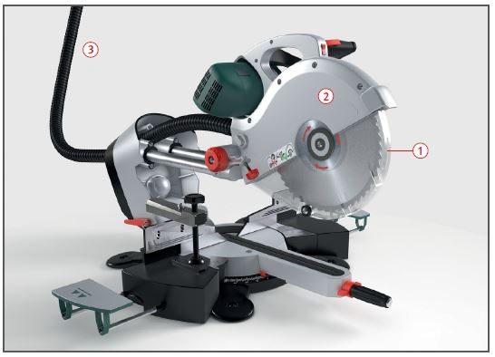
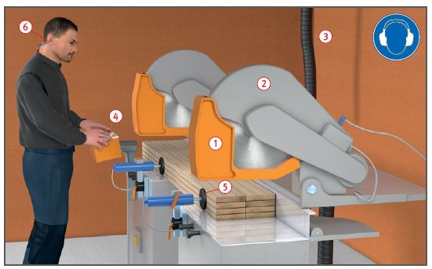

Gefährdungen
- Es kann zu Schnittverletzungen
und einer Schädigung des
Gehörs kommen.
- Das Einatmen freigesetzter
gesundheitsschädlicher Stäube
kann zu einer Erkrankung der
Atemwege führen.
Schutzmaßnahmen
- Betriebsanleitung des Herstellers beachten.
- Unterweisung anhand der Betriebsanweisung
- Gehörschutz
 und Sicherheitsschuhe benutzen. Lärmbereiche kennzeichnen.
und Sicherheitsschuhe benutzen. Lärmbereiche kennzeichnen.
- Eng anliegende Kleidung tragen.
- Gefahrenbereich von 120 mm rund um das Sägeblatt beachten.
- Der zum Schneiden erforderliche Teil des Sägeblattes muss
in der Ausgangsstellung verkleidet
sein, z. B. durch Pendelschutzhauben
 .
.
- Bewegliche Zahnkranzverdeckungen müssen in der Ausgangsstellung verriegelt sein.
- Sägeblätter müssen bis auf
die größtmögliche Schnitthöhe
durch feste Schutzhauben
verkleidet sein
 .
.
- Werkstückanschlag so einrichten, dass der Spalt zum Durchtritt des Sägeblattes so schmal wie möglich ist. Der Werkstückanschlag muss über die gesamte Tischlänge reichen.
- Bei Maschinen, die von hinten
schneiden, muss
- die Schneidebene verdeckt sein,
- das Sägeblatt in Ruhestellung
hinter der Werkstückanlage
verdeckt liegen.
- Bei langen Werkstücken Kippgefahr
durch zusätzliche Auflage
der Werkstücke verhindern.
- Maschine nur mit wirksamer
Absaugung min. Staubklasse M betreiben
 .
.
- Auf sichere Hand- bzw. Fingerhaltung achten.
Achtung: Besondere Vorsicht
bei Gehrungsschnitten.
- Splitter, Späne und Abfälle
nicht mit der Hand aus dem
Gefahrenbereich entfernen.
- Auch bei kurzen Unterbrechungen
Maschine abschalten.

Zusätzliche Hinweise für Maschinen mit kraftbetriebenem Vorschub
- Nur Maschinen benutzen, bei
denen während des Werkzeugvorschubes
ein Hineingreifen in
die Schneidebene vermieden
wird, z. B. Maschinen mit Zweihandschaltungen
 .
.
- Zweihandschaltungen müssen
unmittelbar neben dem
Schneidbereich liegen und so
angeordnet, beschaffen und
gestaltet sein, dass
- für die Betätigung beide
Hände erforderlich sind,
- die Bedienelemente während
des gesamten Arbeitsganges
betätigt werden müssen,
- beim Loslassen auch nur eines
Bedienelementes der Werkzeugvorschub
unterbrochen
und umgekehrt wird,
- für jeden Arbeitsgang die
Bedienelemente erneut
betätigt werden müssen.
- Werkstücke mit Festhaltevorrichtungen
gegen Ausweichen
sichern, z. B. durch Niederhalter,
Spannzylinder
 .
.
- Darauf achten, dass Maschinen
nach dem Sägevorgang vollständig
in die Ausgangsstellung
zurückgehen und dort selbsttätig festgehalten werden.
Zusätzliche Hinweise für Kreissägeblätter
- Nur Sägeblätter verwenden,
die mit dem Namen oder
Zeichen des Herstellers gekennzeichnet
sind.
- Keine Sägeblätter aus hoch
legiertem Schnellarbeitsstahl
(HSS) verwenden.
- Lärmarme Sägeblätter benutzen.
- Nur Sägeblätter mit negativem Spanwinkel ≤ 5° verwenden.
- Beschädigte Sägeblätter, z. B.
solche mit Rissen, Verformungen,
Brandflecken, aussortieren.
- Bei Verbundkreissägeblättern
muss zusätzlich die höchstzulässige Drehzahl angegeben
sein. Angegebene Drehzahl nicht überschreiten.
Arbeitsmedizinische Vorsorge
- Arbeitsmedizinische Vorsorge
nach Ergebnis der Gefährdungsbeurteilung
veranlassen (Pflichtvorsorge)
oder anbieten (Angebotsvorsorge).
Hierzu Beratung
durch den Betriebsarzt.
Beschäftigungsbeschränkungen
- Jugendliche über 15 Jahre
dürfen nur unter Aufsicht eines
Fachkundigen und wenn es die
Berufsausbildung erfordert an
Kappsägen, Zugsägen arbeiten.
- Jugendliche unter 15 Jahre
dürfen nicht an den Maschinen beschäftigt werden.
07/2021